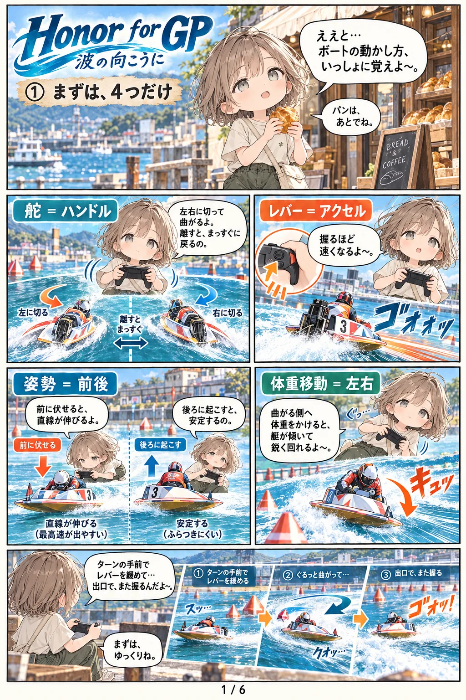

HONOR FOR GP 波の向こうに操作説明書
ボートを動かす操作は4つだけです。スマホのタッチ、コントローラ、キーボードのどれでも同じ4つを操作します。
漫画で見る

基本の4つ
レバー（アクセル）握るほど速くなる。ターンの手前で緩め、出口でまた握る。
舵（ハンドル）左右に切って曲がる。離すとまっすぐに戻る。
体重移動（左右）曲がる側に体重をかけると、艇が傾いて鋭く回れる。
姿勢（前後）前に伏せると直線が伸びる。後ろに起こすと安定する。
スマホ（タッチ）
スマホは横向きで遊びます。操作モードは3つあり、最初の画面か設定で選べます。
画面のボタン（ピット離れのとき）
主張
一つ内側のコースを狙う押すたびに一つ内へ。押さなければ枠のまま。
引く
ダッシュ位置へ下がる2マークを回ってから、スタートラインに正対するまでの間に押す。
右上の歯車
設定を開く
コントローラ
Xbox・PlayStation系のコントローラをPCやスマホにつなぐと使えます。スティックやトリガーに触れた時点でコントローラ操作に切り替わります。
走る
RT 右トリガー
レバー引いた分だけ握る。離すと戻る。設定で左トリガー（LT）に変えられます。
右スティック 左右
舵
左スティック 左右
体重移動
左スティック 上／下
上で伏せる、下で起こす
スタート前・その他
A
コースを主張（ピット離れのとき）
B または Y
引く（ダッシュへ）
X
今の練習を最初からやり直す
Start
設定を開く／閉じる
メニュー
十字キー・左スティック
項目を選ぶ選択肢のある項目は左右で値が変わります。
A ／ B
決定 ／ キャンセル（閉じる）
キーボード
PC向けです。レバーはキーを押している間だけ少しずつ動き、離した位置で止まります。
走る
W
レバーを握る押している間、少しずつ上がる（全開まで約0.8秒）。
S
レバーを緩める
A D
舵（左・右）離すとまっすぐに戻る。
← →
体重移動（左・右）
↑
伏せる
↓
起こす
スタート前・その他
Space
引く（ダッシュへ）
マウスで「主張」
コースを主張キーは割り当てていません。画面のボタンをクリックします。
Esc
全画面を抜けてウィンドウ表示にする設定の「画面（PC）」で全画面に戻せます。
上級テクニック
ウィリーターン
姿勢を後ろへ素早く2回（タタン）入れて、そのままレバーを全開に握ります。舳先を上げたまま回るので、引き波に強くターンの出口が速くなります。
- 出足と回り足がどちらも「○」以上のモーターでないと出ません。
- 失敗すると減速したり、バランスを崩して転覆することがあります。
- キーボードは ↓↓＋W、コントローラは左スティック下を2回＋トリガー。
舳先の跳ね上げ（後ろ重心）
ターンの出口で、伏せた姿勢から一気に後ろへ起こすと舳先が跳ね上がり、一瞬だけ加速が強くなります。すぐ伏せ直すのがコツです。
- 回っている最中に使うと、プロペラが空回りして外へ流れます。
- 引き波の上や、艇を深く傾けたままだと転覆しやすくなります。